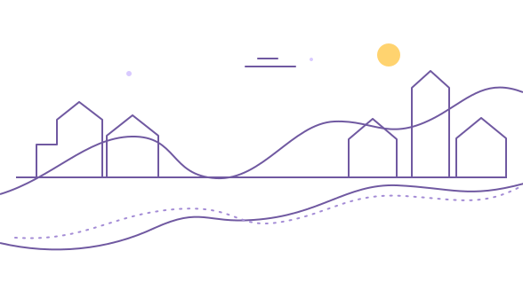

Para quién
Personas y hogares que se plantean mudarse en Cataluña y necesitan saber qué municipios encajan con su vida diaria.
Kit de marca · v1.0
Una identidad para acompañar la búsqueda de un lugar donde vivir en Cataluña.

relo.cat es un asistente de vivienda dentro de ChatGPT. Ayuda a comparar municipios de Cataluña a partir del presupuesto, los desplazamientos, las etapas escolares y otras necesidades del hogar. Las ayudas públicas y el ahorro aportan contexto a la decisión.
Personas y hogares que se plantean mudarse en Cataluña y necesitan saber qué municipios encajan con su vida diaria.
Una lista corta de opciones, los motivos de cada coincidencia, sus límites y enlaces para comprobar la información.
Primero aplica necesidades imprescindibles. Después explica los compromisos y propone un paso que la persona pueda realizar.
La casa representa el objetivo y el punto marca un lugar en el mapa. La firma horizontal combina el símbolo con el nombre en Montserrat 800.
Símbolo mínimo de 24 px o 6 mm. Firma mínima de 100 px o 25 mm. Reserva alrededor un espacio equivalente a un cuarto del ancho del símbolo.
Usa crema o lavanda con la firma principal, berenjena con la variante oscura y monocromo para una tinta. Mantén la proporción y evita sombras, giros y fondos de mucho detalle.
#23193FTexto, marca y fondos oscuros#D9CAFFSelección e ilustración#FFD36FAcción en fondos oscuros#B9E5CBApoyo visual e ilustración#FCF8EFLienzo y texto en oscuroBerenjena sobre crema, lavanda, oro, menta o blanco. Crema u oro sobre berenjena. Violeta #5738AA para enlaces en superficies claras.
Usa un contraste mínimo de 4.5:1 para texto normal y 3:1 para texto grande e indicadores visuales.
Confirmado Por verificar Error Sin datos
Cada estado conserva una etiqueta visible. El color y el icono ayudan a reconocerla.
Què necessites per viure aquí? · ¿Qué necesitas para vivir aquí?
| Nivel | Peso | App | Presentación 16:9 |
|---|---|---|---|
| Titular | 800 | 32–48 px / 1.08 | 44–64 pt |
| Subtítulo | 700 | 20–28 px / 1.2 | 28–36 pt |
| Cuerpo | 500 | 16 px / 1.6 | 18–24 pt |
| Etiqueta y fuente | 600–700 | 14 px / 1.5 | 14–16 pt |
Usa cifras tabulares en comparativas, importes con moneda y mayúsculas solo en etiquetas cortas. En web, la alternativa de sistema es Segoe UI.
Los iconos operan en una cuadrícula de 24 × 24 con trazo de 1.75 px y remates redondeados. Usa una etiqueta en acciones y estados, y marca como decorativo el icono que repita texto contiguo.
Laia inicia la búsqueda, Marc revisa su progreso, Núria explora rutas alternativas y Jordi cierra el recorrido de compra. Conserva los nombres y el papel de cada personaje al documentar estos recorridos.
Usa la ilustración de personajes aprobada en portadas, bienvenida o transiciones. En avisos, cifras y elegibilidad, usa texto e iconos funcionales.
Una acción principal por vista. Cada ficha muestra municipio, motivo de encaje, contrapartida y fuente. Usa radios de 12 px en controles, 20 px en tarjetas y 28 px en módulos destacados. Separa elementos con múltiplos de 4 px.
Muestra carga, resultado vacío, error y datos por verificar con texto y acciones específicas. Separa fecha, fuente y ámbito. En ayudas, muestra estado de convocatoria y elegibilidad en campos distintos.
Una columna en pantallas estrechas, dos para comparar cuando haya espacio. Objetivos interactivos de 44 px, foco visible y navegación por teclado. Respeta la preferencia de movimiento reducido.
Nombra cada parada o municipio y acompaña el mapa con una lista. En series comparadas, usa etiquetas o patrones además del color. Marca los datos simulados y las estimaciones donde se muestran.
Formato 16:9 con márgenes del 6 %. Titulares Montserrat 800 y cuerpo 500, alineados a la izquierda. Portada y cierre en berenjena, contenido en crema, oro para el punto de atención y menta o lavanda para agrupar evidencias.
Nombre, una frase breve y una ilustración. Cierra con el paso siguiente del público.
Un mensaje por diapositiva. Usa bloques numerados solo para pasos que ocurren en orden.
Usa fichas claras con fecha y ámbito. Identifica el contenido ilustrativo en la propia diapositiva.
Usa brand.css como referencia de tokens. Copia los SVG desde assets/. Los nombres de los iconos describen su función y los nombres de los personajes permanecen en catalán.
Comprueba que el texto cabe en móvil y en castellano y catalán. Revisa foco, contraste, fechas, divisa, fuentes y etiquetas de demo. Usa la impresión del navegador para exportar el manual o la presentación a PDF.
 Transporte
Transporte Confirmado
Confirmado